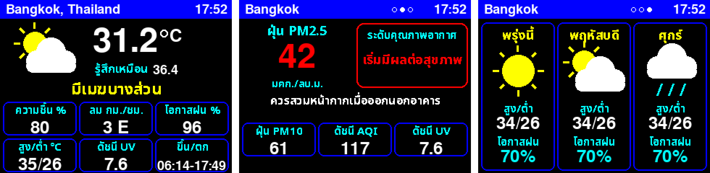

🌤️ ESP32 Weather
ติดตั้งระบบรายงานสภาพอากาศลงบอร์ด ESP32-2432S028 (จอเหลือง 2.8 นิ้ว) ผ่านเบราว์เซอร์ กดปุ่มเดียว ไม่ต้องลงโปรแกรม แล้วตั้งค่า Wi-Fi ในหน้านี้ได้เลย

ติดตั้ง 3 ขั้นตอน
- เปิดหน้านี้ใน Google Chrome หรือ Microsoft Edge บนคอมพิวเตอร์
- เสียบบอร์ดเข้าคอมด้วยสาย USB ที่ส่งข้อมูลได้
- กดปุ่มด้านล่าง → เลือกพอร์ต CH340 → Install → รอจนเสร็จ แล้วกด Connect to Wi-Fi เพื่อใส่ชื่อและรหัส Wi-Fi บ้าน
เวอร์ชัน 3.1.0 · ถ้าระบบถามว่าจะ Erase device ไหม: ติดตั้งครั้งแรกให้ติ๊ก, อัปเดตให้ไม่ต้องติ๊ก (การตั้งค่าเดิมจะอยู่ครบ)
หลังติดตั้ง
หลังตั้ง Wi-Fi บอร์ดจะรีสตาร์ทและแสดงสภาพอากาศภายใน 20 วินาที
| เปลี่ยนหน้า | แตะจอ 1 ครั้ง (ปัจจุบัน → ฝุ่น PM2.5 → พยากรณ์ 3 วัน) |
| เตือนฝน | ถ้าโอกาสฝนใน 2 ชม. ถึง 60% จอจะสลับขึ้นคำเตือนสีฟ้า และมีเสียงบี๊บ 2 ครั้ง (ไม่ดังตอนกลางคืน) |
| โหมดกลางคืน | 22:00–06:00 จอหรี่อัตโนมัติ แตะจอเพื่อเปิดสว่างชั่วคราว |
| อัปเดตทันที | กดปุ่ม 🔄 ในหน้าเว็บของบอร์ด |
| ดูบนมือถือ | เปิด http://esp32-weather.local (ต่อ Wi-Fi บ้านเดียวกัน) หรือกด Visit Device ในหน้าต่างติดตั้ง |
| เปลี่ยนเมือง | ในหน้าเว็บของบอร์ด ช่อง "เปลี่ยนเมือง" |
| เปลี่ยน Wi-Fi | กดปุ่มด้านบนอีกครั้ง → Change Wi-Fi |
หน้าจอที่ถูกต้อง: พื้นดำ, หัวจอสีน้ำเงิน, ตัวเลขสีขาว, คำอธิบายอากาศสีเหลือง, ป้ายสีฟ้า
สีค่าฝุ่น PM2.5 (เกณฑ์กรมควบคุมมลพิษ): ฟ้า = ดีมาก (0–15) · เขียว = ดี (15–25) · เหลือง = ปานกลาง (25–37.5) · แดง = เริ่มมีผลต่อสุขภาพ (37.5–75) · ม่วง = มีผลต่อสุขภาพ (75+)
แก้ปัญหา
ภาพบนจอกลับด้าน, พื้นเป็นสีขาว หรือจอขาวล้วน
จอรุ่นนี้แต่ละล็อตใช้ชิปต่างกัน ให้กดจอค้างไว้ 6 วินาที (กดแรงหน่อย) บอร์ดจะเปลี่ยนโหมดจอและรีสตาร์ท ทำซ้ำจนได้พื้นดำและตัวหนังสืออ่านได้ปกติ มี 6 โหมด
หรือกดปุ่มติดตั้ง → Logs & Console → พิมพ์ display แล้วกด Enter
หาพอร์ต CH340 ไม่เจอ
- ลองสาย USB เส้นอื่น เพราะสายชาร์จอย่างเดียวส่งข้อมูลไม่ได้
- Windows: ติดตั้งไดรเวอร์ CH340 แล้วถอดสายเสียบใหม่
ติดตั้งค้างที่ "Connecting" หรือขึ้น error
กดปุ่ม BOOT บนบอร์ดค้างไว้ระหว่างเลือกพอร์ต แล้วปล่อยเมื่อเริ่มติดตั้ง ปิดแท็บอื่นที่เปิดพอร์ตอยู่ (เช่น esptool-js หรือ Serial Terminal) ก่อนด้วย
ต่อ Wi-Fi ไม่สำเร็จ
- บอร์ดใช้ได้เฉพาะ Wi-Fi 2.4 GHz ถ้าเป็นชื่อที่ลงท้าย 5G จะใช้ไม่ได้
- ถ้าใช้ Hotspot มือถือ ให้ตั้งเป็นคลื่น 2.4 GHz
- ตรวจตัวพิมพ์เล็ก/ใหญ่ของรหัสผ่าน
ไม่มีคอมพิวเตอร์ / ตั้งค่า Wi-Fi ด้วยมือถือ
บอร์ดที่ยังไม่มี Wi-Fi จะปล่อยสัญญาณชื่อ ESP32-Weather-Setup ให้ใช้มือถือเชื่อมต่อ แล้วปิดเน็ตมือถือชั่วคราว จากนั้นเปิด http://192.168.4.1
ข้อมูลอากาศและฝุ่นจาก Open-Meteo · ฟอนต์ Noto Sans Thai (SIL OFL) · ติดตั้งด้วย ESP Web Tools · ดาวน์โหลดไฟล์เต็ม (.bin, flash ที่ 0x0)